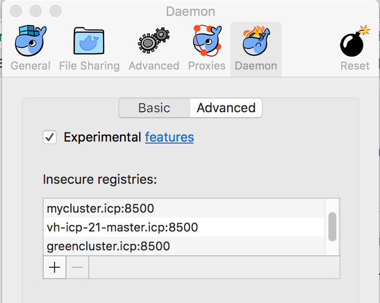
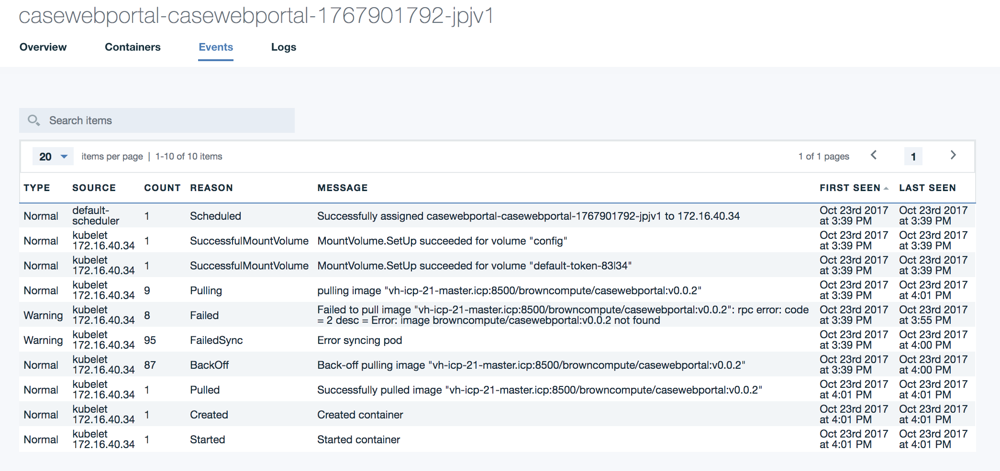
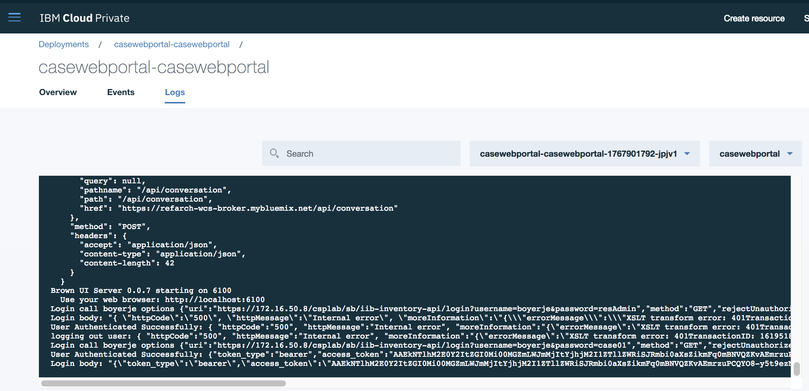

Troubleshouting in ICP
This note regroups a set of things we have met during our work on kubernetes and ICP.
- The Kubernetes official troubleshooting docs
Table of contents
Installation specifics
The installation of the ICP 2.1.0.x is here
Error: hostname not resolved
fatal: [...] => Failed to connect to the host via ssh: ssh: Could not resolve hostname ...: Name or service not known
ssh connect failure
fatal: [192.168.1.147] => Failed to connect to the host via ssh: Permission denied (publickey, password).
While login from a developer's laptop.
$ docker login cluster.icp:8500 > Error response from daemon: Get https://cluster.icp:8500/v2/: net/http: request canceled while waiting for connection (Client.Timeout exceeded while awaiting headers)
Issues during upgrade to 2.1.0.1
The following issues are errors that may occur during the upgrade to ICP 2.1.0.1.
Etcd Fails to Start During Upgrade
While running the Kubernetes upgrade on the master node, Etcd fails to start. This is due to swap being enabled on the OS. Resolution is to disable swap.
Error Message
TASK [upgrade-master : Waiting for Etcd to start] ******************************
fatal: [172.16.40.130]: FAILED! => {"changed": false, "elapsed": 600, "failed": true, "msg": "The Etcd component failed to start. For more details, see https://ibm.biz/etcd-fails."}
Problem Determination & Resolution
- Check Kubelet Logs to determine why node has not started.
$ journalctl -u kubelet &> kl.log - Open kl.log and check the error.
Jan 18 11:42:32 green-icp-proxy hyperkube[31106]: Error: failed to run Kubelet: Running with swap on is not supported, please disable swap! or set --fail-swap-on flag to false. /proc/swaps contained: [Filename
- Disable swap.
$ swapoff -a $ sudo sed -i '/ swap / s/^\(.*\)$/#\1/g' /etc/fstab
Kubelet Install Fails on Nodes
During the Kubernetes upgrade step, the installer attempts to install Kubelet on each of the nodes. The installation fails because the ibmcom/kubernetes:v1.8.3-ee image is not on the nodes. Resolution is to put the image on the nodes manually.
Error Message
TASK [upgrade-kubelet : Ensuring kubelet install dir exists] ****************************************************************************************************************************************
ok: [172.16.40.135]
FAILED - RETRYING: Copying hyperkube onto operating system (3 retries left).
FAILED - RETRYING: Copying hyperkube onto operating system (2 retries left).
FAILED - RETRYING: Copying hyperkube onto operating system (1 retries left).
TASK [upgrade-kubelet : Copying hyperkube onto operating system] ************************************************************************************************************************************
fatal: [172.16.40.135]: FAILED! => {"attempts": 3, "changed": true, "cmd": "docker run --rm -v /opt/kubernetes/:/data ibmcom/kubernetes:v1.8.3-ee sh -c 'cp -f /hyperkube /data/'", "delta": "0:00:00.574937", "end": "2018-01-18 10:03:52.881064", "failed": true, "rc": 125, "start": "2018-01-18 10:03:52.306127", "stderr": "Unable to find image 'ibmcom/kubernetes:v1.8.3-ee' locally\ndocker: Error response from daemon: manifest for ibmcom/kubernetes:v1.8.3-ee not found.\nSee 'docker run --help'.", "stderr_lines": ["Unable to find image 'ibmcom/kubernetes:v1.8.3-ee' locally", "docker: Error response from daemon: manifest for ibmcom/kubernetes:v1.8.3-ee not found.", "See 'docker run --help'."], "stdout": "", "stdout_lines": []}
Problem Determination & Resolution
-
Log onto node and checked the local images. Notice that the ibmcom/kubernetes:v1.8.3-ee image is absent.
$ docker image ls
-
Copy ibm-cloud-private-x86_64-2.1.0.1.tar.gz package to the node.
-
Extract the images and load into Docker
$ tar xf ibm-cloud-private-x86_64-2.1.0.1.tar.gz -O | sudo docker load
Access
Unknown certificate authority
$ docker login mycluster.icp:8500 Error response from daemon: Get https://mycluster.icp:8500/v2/: x509: certificate signed by unknown authority
Go to your docker engine configuration and add the remote registry as an insecure one. On MAC you select the docker > preferences > Daemons> Advanced menu and then add the remote master name
{ "debug" : true, "experimental" : true, "insecure-registries" : [ "jbcluster.icp:8500", "mycluster.icp:8500", "cpscluster.icp:8500" ] }
You can also verify the certificates are in the logged user ~/.docker folder. This folder should have a certs.d folder and one folder per remote server, you need to access. So the mycluster.icp:8500/ca.crt file needs to be copied there too.
Not able to login to docker repository running on master node
Different type of messages:
Unknown authority
`Error response from daemon: Get https://greencluster.icp:8500/v2/: x509: certificate signed by unknown authority. You need to configure your local docker to accept to connect to insecure registries by adding an entry about the target host. On MACOS the Preferences> Daemon > Advanced

See also the note about accessing ICP private repository here and how to copy SSL certificate to your local host.
x509 certificate not valid for a specific hostname
Be sure the hostname you are using is in your /etc/hosts and you docker login to the good host.
Could not connect to a backend service. Try again later. (E0004)
While trying to get cluster configuration with command like bx pr cluster-config green2-cluster got this message.
The problem may come from a lack of disk space on / on the host OS of the active master node. To add space for the virtual machine with Ubuntu OS, you need to do the following:
Using the VM management tool like VMWare vsphere, add a new virtual disk
log as root user to host OS, and list the device with ls /dev/sd*. You may have a new sdc or sdb device. We assume sdc for now.
* Stop docker and kubelet (it can take some time for docker to stop):
```bash
systemctl stop docker
systemctl stop kubelet
* See existing disks with `fdisk -l` and add a new disk with `fdisk /dev/sdc`. It should add a DOS partition and use the w option to write the changes. * Create different tables for the filesystem using `mkfs.ext4 /dev/sdc` * mount the newly created filesystem to a new folder:
* Move ICP install file to the new disk: `mv /opt/ibm/cfc/* /mnt/disk` * unmount but update the boot setting to get the disk back on reboot: ``` umount /mnt/disk vi /etc/fstab /dev/sdc /opt/ibm/cfc ext4 default 1 3 ``` * restart docker and kubelet: ``` systemctl start docker systemctl start kubelet ``` See also [this note](https://kb.vmware.com/s/article/1003940) ## 503 on a deployed app with ingress rule The following message "503 Service Temporarily Unavailable" may appear when accessing a pod via virtual hostname defined in Ingress rules. Be sure to understand the ingress role To investigate do the following: * Display the helm release, and verify the Ingress is specified and the hosts is specified, the IP address matches the proxy IP address in the cluster. In the service verify the type is ClusterIP and the ports map the exposed port in the docker image.  * In the ingress verify the service name, the app selector are matching with the deployment parameters using Service > Ingress -> Edit:  ## Helm connection Issue: tls: bad certificate For the *Error: remote error: tls: bad certificate*: you need to be logged into the cluster and get the cluster config. The commands are:
## Helm version not able to connect to Tiller. Error: cannot connect to Tiller With version 2.1.0.2, TLS is enforced to communicate with the server. So to get the version the command is `helm version --tls`. You need also to get the certificates for the cluster. The command ` bx pr cluster-config <clustername>` will add those certificate into `~/.helm`. ## Helm incompatible version The error message may look like: `Error: incompatible versions client[v2.9.1] server[v2.7.3+icp]` Use the command to upgrade: `helm init --upgrade` ### For using SSL between Tiller and Helm See [this note from github helm account](https://github.com/helm/helm/blob/master/docs/tiller_ssl.md) # Deployment ## helm install command: User is not authorized to install release Be sure to enter the good namespace name in the install command. ## Pod not getting the image from docker private repository Looking at the Events report from the pod view you got a message like:
The new version of k8s enforces the use of secret to access the docker private repository. So you need to add a secret, named for example regsecret, for the docker registry object.
Then modify the deployment.yaml to reference this secret so the pod can access the repo during deployment: ``` spec: containers: - name: {{ .Chart.Name }} image: "{{ .Values.image.repository }}:{{ .Values.image.tag }}" .... imagePullSecrets: - name: regsecret
Verify deployment
When you deploy a helm chart you can assess how the deployment went using the ICP admin console or the kubectl CLI.
For the user interface, go to the Workloads > Deployments menu to access the list of current deployments. Select the deployment and then the pod list. In the pod view select the events to assess how the pod deployment performed

and the log file in Logs menu

Using kublectl to get the status of a deployment
$ kubectl get deployments --namespace browncompute > NAME DESIRED CURRENT UP-TO-DATE AVAILABLE AGE casewebportal-casewebportal 1 1 1 1 2d
kubectl describe deployment browncompute-dal-browncompute-dal
Get the logs and events
$ export POD_NAME=$(kubectl get pods --namespace browncompute -l "app=casewebportal-casewebportal" -o jsonpath="{.items[0].metadata.name}") $ kubectl logs $POD_NAME --namespace browncompute $ kubectl get events --namespace browncompute --sort-by='.metadata.creationTimestamp'
Accessing an app expose with Ingress: 503 Service Temporarily Unavailable
This could be due to ingress rule configuration issue. We need to assess if the pod is up and running
Get the pod name: k get pods --namespace greencompute
Verify no issue in the container itself: k logs bc-inventory-dal-browncompute-dal-6bfb4f85b8-tdzjt --namespace greencompute
if the service and ingress are well defined
Go to the service view or kubectl get svc --namespace greencompute -o wide verify the app-selector and service Type
Verify the service definition: k describe svc bc-inventory-dal-browncompute-dal --namespace greencompute
* Get the ingress with kubectl describe ingress bc-inventory-dal-browncompute-dal -n greencompute
Name: bc-inventory-dal-browncompute-dal Namespace: greencompute Address: 172.16.40.131 Default backend: default-http-backend:80 (<none>) Rules: Host Path Backends ---- ---- -------- dal.brown.case / bc-inventory-dal-browncompute-dal:http (<none>) Annotations: Events: <none>
We need to look at the ingress-controller config:
Get the list of ingress controllers: kubectl get pods -n kube-system
Get the controller logs and verify if it receives the configuration when we deployed the service: kubectl logs nginx-ingress-controller-gvcj5 -n kube-system. Search for message with "Event ... Kind: Ingress..."
- Get NGINX configuration:
kubectl exec -it -n kube-system nginx-ingress-controller-gvcj5 cat /etc/nginx/nginx.confHere is an extractAs we can see the $proxy_upstream_name is not set and the configuration is enforcing returning 503. The ingress rule has an issue... the port is not a port number but a name ("bc-inventory-dal-browncompute-dal:http")... So editing the rule and change to port 9080 makes it work:# start server dal.brown.case server { server_name dal.brown.case ; listen 80; listen [::]:80; set $proxy_upstream_name "-"; location / { log_by_lua_block { } port_in_redirect off; set $proxy_upstream_name ""; set $namespace "greencompute"; set $ingress_name "bc-inventory-dal-browncompute-dal"; set $service_name "bc-inventory-dal-browncompute-dal"; ... # No endpoints available for the request return 503;kubectl edit ing -n greencompute bc-inventory-dal-browncompute-dal
Error while getting cluster info
Try to do kubectl cluster-info: failed: error: you must be logged in to the server (the server has asked for the client to provide credentials):
Be sure to have use the settings from the 'configure client'.
Be sure the cluster name / IP address are mapped in /etc/hosts
Be sure to have a ca.crt into ~/.ssh folder
Use the bx pr login -a https://<ipaddress>:8443 -u admin command to login to the cluster
Default backend - 404
This error can occur if the ingress rules are not working well.
- Assess if ingress is well defined: virtual hostname, proxy address and status/age of running
``` kubectl get ing --namespace browncompute
NAME HOSTS ADDRESS PORTS AGE browncompute-dal-browncompute-dal dal.brown.case 172.16.40.31 80 59m casewebportal-casewebportal portal.brown.case 172.16.40.31 80 10d ```
-
Get the detail of ingress rules, and its mapping to the expected service, the path and host mapping.
kubectl describe ingress browncompute-dal-browncompute-dal --namespace browncompute Name: browncompute-dal-browncompute-dal Namespace: browncompute Address: 172.16.40.31 Default backend: default-http-backend:80 (10.100.221.196:8080) Rules: Host Path Backends ---- ---- -------- dal.brown.case / inventorydalsvc:9080 (<none>) Annotations: No events.
-
If ingress rules are correct for your release, check to see if there are other releases sharing the same host rule. This can happen if the release was deleted without the ingress rule being removed.
kubectl get ing --all-namespaces=true NAMESPACE NAME HOSTS ADDRESS PORTS AGE greencompute greencompute-green-customerapp-green-customerapp greenapp.green.case 172.16.40.131 80 1h greencompute greencustomerapp-green-customerapp greenapp.green.case 172.16.40.131 80 1h
Delete the conflicting ingress.
kubectl delete ing greencompute-green-customerapp-green-customerapp ingress "greencompute-green-customerapp-green-customerapp" deleted
ICP Cluster is not accessible via admin console
After restart of the ICP master node, the ICP cluster is inaccessible remotely.
-
Log into master node via SSH and check kube-system pods
$ kubectl -s 127.0.0.1:8888 -n kube-system get pods -
Check if any pods are in a bad state such as CrashLoopBackOff
... k8s-master-172.16.40.130 2/3 CrashLoopBackOff 393 40s ...
-
Check the containers for that pod
$ kubectl –s 127.0.0.1:8888 –n kube-system describe pods k8s-master-172.16.40.130 -
To view the logs for a specific container, use the following command. For example, the controller-manager in the k8s-master-172.16.40.130 pod:
$ kubectl –s 127.0.0.1:8888 –n kube-system logs k8s-master-172.16.40.130 –p controller-manager
Investigation
When something is going wrong you can do the following:
assess the node status with kubectl get nodes -o wide
assess the state of the pods and where they are deployed: kubectl get pods -o wide
look at what is deployed within a node: kubectl describe <podname>
assess the storage state with kubectl get pv and kubectl get pvc
Access logs of a pod: 'kubectl logs kubectl exec -tin <namespace> <podname> sh
* For a CrashLoopBackoffs error: CrashLoopBackoff encapsulates a large set of errors that are all hidden behind the same error condition. Some potential debugging steps
* kubectl describe pod <podname>
* ssh to the host